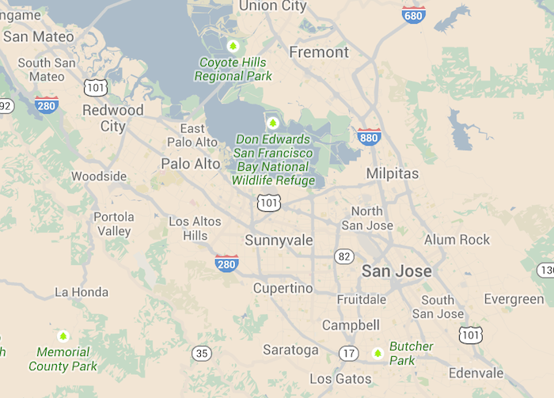

Interchange
Interchange uses media queries to dynamically load responsive content that is appropriate for different users' browsers.

Using Interchange With HTML Content
Interchange can now pull in HTML partials so you can load different sections of your page for particular media queries. This is great for loading up a mobile-friendly component on small devices, and a more robust or heavier load component on desktops.
We use the data-interchange attribute on a markup container (probably a div) to do this. Here's an example which loads up a small, static map on mobile, a larger static map for medium-sized devices, and a full interactive Google map on large display devices.

<div data-interchange="[../examples/interchange/default.html, (small)], [../examples/interchange/medium.html, (medium)], [../examples/interchange/large.html, (large)]">
<div data-alert class="alert-box secondary radius">
This is the default content.
<a href="#" class="close">×</a>
</div>
</div>Each rule passed to data-interchange is comma delimited and encapsulated in square brackets, and each argument within a rule is also comma delimited. The first parameter is the path to your image, and the second parameter is your media query, surrounded by parenthesis.
The last rule that evaluates to true will be the image that gets loaded. Excluding the src attribute keeps the browser from making two requests for images.
Using Interchange With Images
Using Interchange with images alone is the same process as arbitrary HTML content, and a common use case for Interchange. This way you'll only load larger resources for devices that can handle it.
<img data-interchange="[/path/to/default.jpg, (default)], [/path/to/bigger-image.jpg, (large)]">
<!-- or your own queries -->
<img data-interchange="[/path/to/default.jpg, (only screen and (min-width: 1px))], [/path/to/bigger-image.jpg, (only screen and (min-width: 1280px))]">data-interchange="[image_path, (media query)], [image_path, (media query)]"If you want to support browsers with JavaScript disabled, we recommend setting your default image in a <noscript> tag so that these browsers will have a fallback:
<img data-interchange="[/path/to/default.jpg, (default)], [/path/to/bigger-image.jpg, (large)]">
<noscript><img src="/path/to/default.jpg"></noscript>You should always specify a default directive for Interchange.
Using Interchange with background-images
When you add a data-interchange attribute containing image paths (.jpg, .jpeg, .png, .gif, .bmp, .tiff), instead of replacing the element content it will set a background-image css property with the corresponding path.
<div data-interchange="[/path/to/default.jpg, (default)], [/path/to/bigger-image.jpg, (large)]"></div>This solution does not support browsers with JavaScript disabled. To add a fallback you can add a default background-image in your css but this can result in loading more than one image on some device. This method is only switching the background-image on the element. You will need to set the others background properties in your css (background-repeat, background-position, background-size...).
Using Retina Images
You can easily include retina images by using a pixel-density media query for that image. You can even combine multiple parameters in the media query if need be. The retina media query would look something like this, but you can also use dpi or other pixel densities as well:
data-interchange="[image/path/to/retina.jpg, (retina)]"Named Queries
Interchange has a few built-in shortcuts that correlate with our visibility classes.
| Name | Media Query |
|---|---|
| default | only screen and (min-width: 1px) |
| small | only screen and (min-width: 1px) |
| medium | only screen and (min-width: 641px) |
| large | only screen and (min-width: 1024px) |
| landscape | only screen and (orientation: landscape) |
| portrait | only screen and (orientation: portrait) |
| retina (4.2.1) | only screen and (-webkit-min-device-pixel-ratio: 2),
|
To use the named queries, just pass the name in where you would normally specify your query.
data-interchange="[image_path, (default)], [image_path, (landscape)]"Custom Named Queries
Custom queries can be defined during initialization and are an easy way to make your queries more readable. You can also override the default queries in this way:
$(document).foundation('interchange', {
named_queries : {
my_custom_query : 'only screen and (max-width: 200px)'
}
});Events
Interchange triggers a replace event when a rule evaluates to true and the content has been replaced. This can be useful when you want to change some styles on your page based on which content is loaded.
$(document).on('replace', 'img', function (e, new_path, original_path) {
console.log(e.currentTarget, new_path, original_path);
});Adding New Interchange Content After Page Load
If you add new content after the page has been loaded, you will need to reinitialize the Foundation JavaScript by running the following:
$(document).foundation();Using the JavaScript
Before you can use Interchange you'll want to verify that jQuery and foundation.js are available on your page. You can refer to the JavaScript documentation on setting that up.
Just add foundation.interchange.js AFTER the foundation.js file. Your markup should look something like this:
<body>
...
<script src="js/vendor/jquery.js"></script>
<script src="js/foundation/foundation.js"></script>
<script src="js/foundation/foundation.interchange.js"></script>
<!-- Other JS plugins can be included here -->
<script>
$(document).foundation();
</script>
</body>Required Foundation Library: foundation.interchange.js